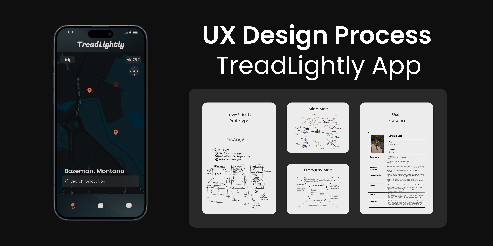
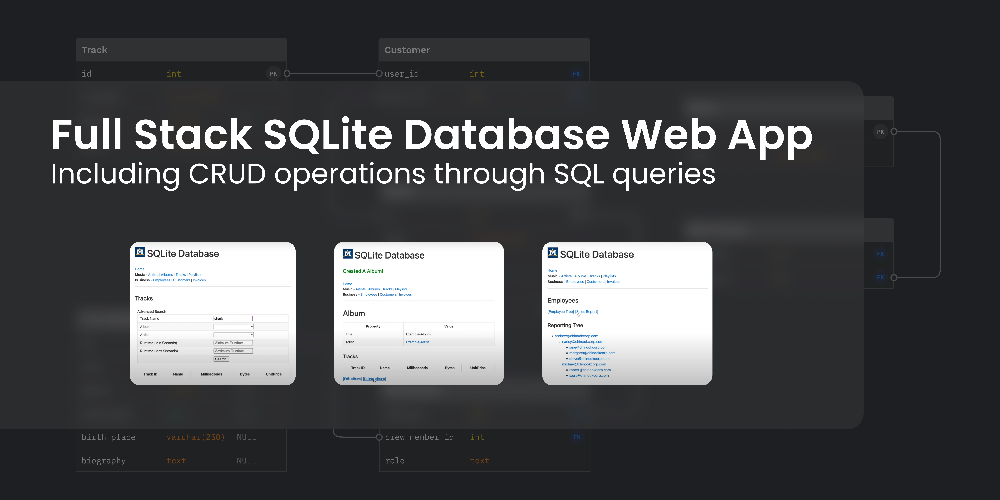
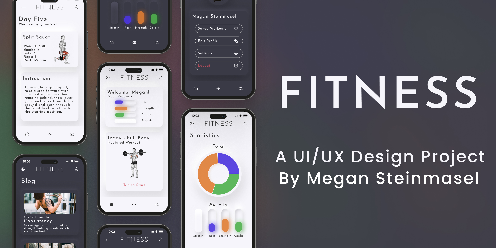

Hey there, I'm Megan! Currently a senior at Montana State University, I'm pursuing a degree in Computer Science. I find joy in utilizing technology as a means to solve problems. Whether it's crafting intuitive digital experiences, delving into cybersecurity challenges, or exploring the intricacies of web development, I find fulfillment in tackling complex problems head-on. When I'm not coding or designing, you'll likely find me exploring the great outdoors and hiking local trails. I also have a creative side and enjoy expressing myself through painting and drawing. Overall, I am a driven individual who thrives on the blend of technology and creativity.
Experience
MSU Software Engineering & Cybersecurity Lab
Employing Snort, Wireshark, and Docker for network quality research purposes. Developing various testing methodologies to validate the consistency of these software tools in analyzing network traffic.
To view my work: Press Here
Contribute Youth Startup
Helping create a crowdfunding WordPress website for a nonprofit organization that helps Montana students in need.
Skills
Technical Skills
HTML, CSS, JavaScript, Java, C, C++, Python, React, Next.js, Figma, Lucidchart, WordPress, Git, Snort, Wireshark, Docker
Certifications
Figma Certification: Beginner to Pro 2023, MSU Leadership Certification
Projects

UX Design Process: TreadLightly App
The TreadLightly App UX Project unfolds in five stages focusing on user-centric design:
1 - User Research and Empathy: Interviewing 5 participants.
2 - Persona Creation: Defining user needs and challenges.
3 - Ideation: Challenging assumptions using a mind map.
4 - Prototyping: Low-fidelity and high-fidelity prototypes.
5 - User Testing: Validate and refine the high-fidelity prototype.
To view the full process: UX Design Process

Network Quality Research Using Snort, Wireshark, and Docker
1 - Conducted research on integrating Snort with Wireshark to enhance network security in cloud microservice ecosystems.
2 - Established a robust testing environment through detailed examination of Snort's architecture and configuration setup.
3 - Enhanced proficiency in crafting custom detection rules to effectively identify network threats.
4 - Ongoing exploration of network traffic analysis within Docker environments, focusing on quantifying malware impact on network integrity.
To view the research: Network Quality Research

Full Stack SQLite Database Web App
The SQLite Web App is a full-stack application that issues SQL queries to the SQLite database and displays various tables based on user input. The Web App includes the following functionalities:
1 - CRUD operations
2 - General and advanced search
3 - Optimistic concurrency
4- Paging
To view the YouTube demo: Web App Demo
To view the Github Repo: Web App Repo

Visual Design: Fitness App
I developed a monochromatic and scalable design for the Fitness App using Figma. The design process I followed included:
1 - Developed a low-fidelity wireframe.
2 - Decided on colors, themes, and fonts.
3 - Went on to create a first iteration Figma prototype.
4 - Tested the first iteration prototype on gym-goers.
5 - Created a second iteration Figma prototype and changed the home page based on user feedback.
To view the full prototype: Fitness App
Activities
Computer Science Outreach Program
I was chosen to represent the MSU computer science program & teach kids about technology and problem solving!
LinkedIn post: World of Works

2023 Grace Hopper Conference
I am honored to have attended the 2023 Grace Hopper Conference in Orlando, Florida!
LinkedIn post: GHC23
Other Works

Forest & Wildflowers Painting
Oil on canvas painting featuring hues of green.

Flower Vase Painting
Rose painting using oil paints.

Snowy Mountain Painting
Pastel oil painting of a snowy mountain at sunset.

Sunset Field Painting
Oil on canvas painting including warm toned colors.
Get In Touch
I would love to connect with you! Whether you have questions, collaboration opportunities, or just want to say hello, feel free to reach out to me via email.
{kind=link}
{kind=link}
{kind=link}
{kind=link}